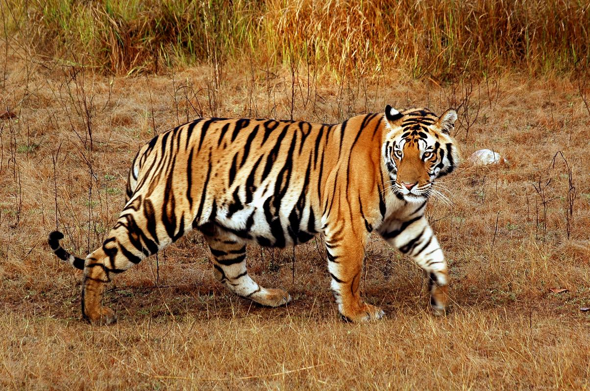

The Siberian Tiger

Top 10 Facts
- Largest of the big cats
- Can be white/black or orange/black
- Can weigh between 200-700lbs
- Live in the remote far east of Russia and China
- Can run between 30-40mph in short bursts
- Sleep between 18-20 hours a day
- Carnivores that eat rabbits, deer, boar and sometimes even bear
- Poaching is one of the greatest threats to wild tigers
- Natioanl animal of South Korea
- Can live 20-26 years in captivity